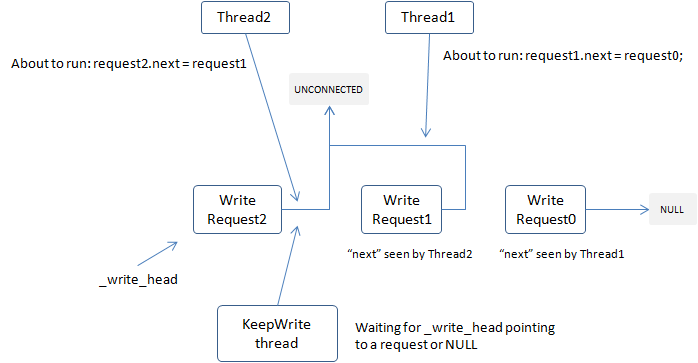
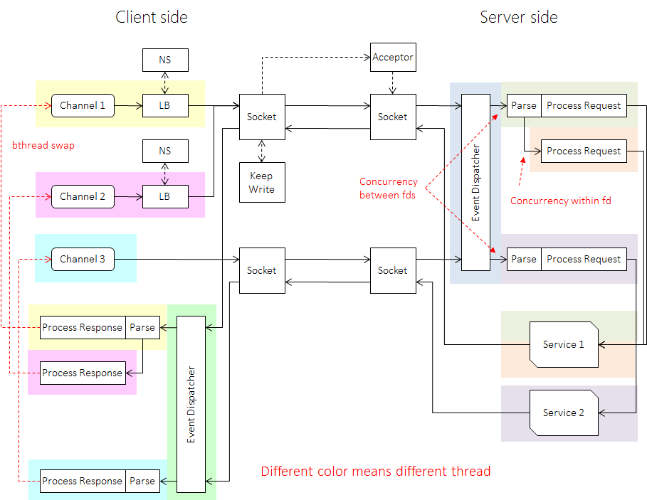

一般有三种操作 IO 的方式：
- blocking IO：发起 IO 操作后阻塞当前线程直到 IO 结束，标准的同步 IO，如默认行为的 posix
read和write。 - non-blocking IO：发起 IO 操作后不阻塞，用户可阻塞等待多个 IO 操作同时结束。non-blocking 也是一种同步 IO：”批量的同步”。如 linux 下的
poll、select、epoll，BSD 下的kqueue。 - asynchronous IO：发起 IO 操作后不阻塞，用户得递一个回调待 IO 结束后被调用。如 windows 下的 OVERLAPPED + IOCP。linux 的 native AIO 只对文件有效。
linux 一般使用 non-blocking IO 提高 IO 并发度。当 IO 并发度很低时，non-blocking IO 不一定比 blocking IO 更高效，因为后者完全由内核负责，而 read/write 这类系统调用已高度优化，效率显然高于一般得多个线程协作的 non-blocking IO。但当 IO 并发度愈发提高时，blocking IO 阻塞一个线程的弊端便显露出来：内核得不停地在线程间切换才能完成有效的工作，一个 cpu core 上可能只做了一点点事情，就马上又换成了另一个线程，cpu cache 没得到充分利用，另外大量的线程会使得依赖 thread-local 加速的代码性能明显下降，如 tcmalloc，一旦 malloc 变慢，程序整体性能往往也会随之下降。而 non-blocking IO 一般由少量 event dispatching 线程和一些运行用户逻辑的 worker 线程组成，这些线程往往会被复用（换句话说调度工作转移到了用户态），event dispatching 和 worker 可以同时在不同的核运行（流水线化），内核不用频繁的切换就能完成有效的工作。线程总量也不用很多，所以对 thread-local 的使用也比较充分。这时候 non-blocking IO 就往往比 blocking IO 快了。不过 non-blocking IO 也有自己的问题，它需要调用更多系统调用，比如 epoll_ctl，由于 epoll 实现为一棵红黑树，epoll_ctl 并不是一个很快的操作，特别在多核环境下，依赖 epoll_ctl 的实现往往会面临棘手的扩展性问题。non-blocking 需要更大的缓冲，否则就会触发更多的事件而影响效率。non-blocking 还得解决不少多线程问题，代码比 blocking 复杂很多。
收消息
“消息”指从连接读入的有边界的二进制串，可能是来自上游 client 的 request 或来自下游 server 的 response。brpc 使用一个或多个 EventDispatcher（简称为 EDISP）等待任一 fd 发生事件。和常见的”IO 线程”不同，EDISP 不负责读取。IO 线程的问题在于一个线程同时只能读一个 fd，当多个繁忙的 fd 聚集在一个 IO 线程中时，一些读取就被延迟了。多租户、复杂分流算法，Streaming RPC 等功能会加重这个问题。高负载下常见的某次读取卡顿会拖慢一个 IO 线程中所有 fd 的读取，对可用性的影响幅度较大。
由于 epoll 的一个 bug（开发 brpc 时仍有）及 epoll_ctl 较大的开销，EDISP 使用 Edge triggered 模式。当收到事件时，EDISP 给一个原子变量加 1，只有当加 1 前的值是 0 时启动一个 bthread 处理对应 fd 上的数据。在背后，EDISP 把所在的 pthread 让给了新建的 bthread，使其有更好的 cache locality，可以尽快地读取 fd 上的数据。而 EDISP 所在的 bthread 会被偷到另外一个 pthread 继续执行，这个过程即是 bthread 的 work stealing 调度。要准确理解那个原子变量的工作方式，可以先阅读《原子操作指令的选择》一文，再看 Socket::StartInputEvent。这些方法使得 brpc 读取同一个 fd 时产生的竞争是 wait-free 的。
InputMessenger 负责从 fd 上切割和处理消息，它通过用户回调函数理解不同的格式。Parse 一般是把消息从二进制流上切割下来，运行时间较固定；Process 则是进一步解析消息（比如反序列化为 protobuf）后调用用户回调，时间不确定。若一次从某个 fd 读取出 n 个消息（n > 1），InputMessenger 会启动 n-1 个 bthread 分别处理前 n-1 个消息，最后一个消息则会在原地被 Process。InputMessenger 会逐一尝试多种协议，由于一个连接上往往只有一种消息格式，InputMessenger 会记录下上次的选择，而避免每次都重复尝试。
可以看到，fd 间和 fd 内的消息都会在 brpc 中获得并发，这使 brpc 非常擅长大消息的读取，在高负载时仍能及时处理不同来源的消息，减少长尾的存在。
发消息
“消息”指向连接写出的有边界的二进制串，可能是发向上游 client 的 response 或下游 server 的 request。多个线程可能会同时向一个 fd 发送消息，而写 fd 又是非原子的，所以如何高效率地排队不同线程写出的数据包是这里的关键。brpc 使用一种 wait-free MPSC 链表来实现这个功能。所有待写出的数据都放在一个单链表节点中，next 指针初始化为一个特殊值（Socket::WriteRequest::UNCONNECTED）。当一个线程想写出数据前，它先尝试和对应的链表头（Socket::_write_head）做原子交换，返回值是交换前的链表头。如果返回值为空，说明它获得了写出的权利，它会在原地写一次数据。否则说明有另一个线程在写，它把 next 指针指向返回的头以让链表连通。正在写的线程之后会看到新的头并写出这块数据。
这套方法可以让写竞争是 wait-free 的，而获得写权利的线程虽然在原理上不是 wait-free 也不是 lock-free，可能会被一个值仍为 UNCONNECTED 的节点锁定（这需要发起写的线程正好在原子交换后，在设置 next 指针前，仅仅一条指令的时间内被 OS 换出），但在实践中很少出现。在当前的实现中，如果获得写权利的线程一下子无法写出所有的数据，会启动一个 KeepWrite 线程继续写，直到所有的数据都被写出。这套逻辑非常复杂，大致原理如下图，细节请阅读 socket.cpp。

由于 brpc 的写出总能很快地返回，调用线程可以更快地处理新任务，后台 KeepWrite 写线程也能每次拿到一批任务批量写出，在大吞吐时容易形成流水线效应而提高 IO 效率。
Socket
和 fd 相关的数据均在 Socket 中，是 rpc 最复杂的结构之一，这个结构的独特之处在于用 64 位的 SocketId 指代 Socket 对象以方便在多线程环境下使用 fd。常用的三个方法：
Create：创建 Socket，并返回其SocketId。Address：取得 id 对应的 Socket，包装在一个会自动释放的 unique_ptr 中（SocketUniquePtr），当 Socket 被SetFailed后，返回指针为空。只要Address返回了非空指针，其内容保证不会变化，直到指针自动析构。这个函数是 wait-free 的。SetFailed：标记一个 Socket 为失败，之后所有对那个SocketId的Address会返回空指针（直到健康检查成功）。当 Socket 对象没人使用后会被回收。这个函数是 lock-free 的。
可以看到 Socket 类似 shared_ptr，SocketId 类似 weak_ptr，但 Socket 独有的 SetFailed 可以在需要时确保 Socket 不能被继续 Address 而最终引用计数归 0，单纯使用 shared_ptr/weak_ptr 则无法保证这点，当一个 server 需要退出时，如果请求仍频繁地到来，对应 Socket 的引用计数可能迟迟无法清 0 而导致 server 无法退出。另外 weak_ptr 无法直接作为 epoll 的 data，而 SocketId 可以。这些因素使我们设计了 Socket，这个类的核心部分自 14 年完成后很少改动，非常稳定。
存储 SocketUniquePtr 还是 SocketId 取决于是否需要强引用。像 Controller 贯穿了 RPC 的整个流程，和 Socket 中的数据有大量交互，它存放的是 SocketUniquePtr。epoll 主要是提醒对应 fd 上发生了事件，如果 Socket 回收了，那这个事件是可有可无的，所以它存放了 SocketId。
由于 SocketUniquePtr 只要有效，其中的数据就不会变，这个机制使用户不用关心麻烦的 race condition 和 ABA problem，可以放心地对共享的 fd 进行操作。这种方法也规避了隐式的引用计数，内存的 ownership 明确，程序的质量有很好的保证。brpc 中有大量的 SocketUniquePtr 和 SocketId，它们确实简化了我们的开发。
事实上，Socket 不仅仅用于管理原生的 fd，它也被用来管理其他资源。比如 SelectiveChannel 中的每个 Sub Channel 都被置入了一个 Socket 中，这样 SelectiveChannel 可以像普通 channel 选择下游 server 那样选择一个 Sub Channel 进行发送。这个假 Socket 甚至还实现了健康检查。Streaming RPC 也使用了 Socket 以复用 wait-free 的写出过程。
整体图景

本篇的 event dispatching、epoll 与 wait-free 写出，都是建立在 Linux I/O 多路复用这座地基上的；这套机制的来龙去脉，本站《TCP/IP 系列导读》的「I/O 多路复用与实战」阶段有更基础的展开。